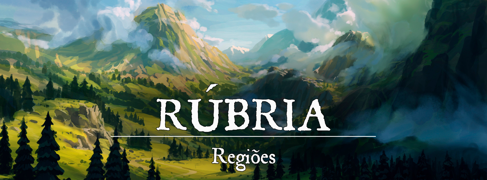

Rúbria
Descrição
Rubria é uma região situada entre três outras: Turgon, Gronnemar e os Pântanos sem Fim. Sendo a menor das quatro, Rubia tem sua independência em virtude, principalmente, das barreiras geográficas que compõem seu território: Rios, Montanhas e Florestas foram decisivos para que os primeiros habitantes pudessem impedir as invasões externas.
O povo rúbrio é resiliente e mais apegado à sua própria terra do que a costumes, propriamente ditos. Por diversas ocasiões, foram ameaçados pelo movimento de tropas de cidades além-rio, que buscavam uma campanha expansionista. Mas os rúbrios utilizavam táticas de guerrilha de forma excepcional, por estarem acostumados com a geografia local e saberem os pontos fortes e fracos de suas terras.
Por terem um terreno irregular e muito vertical, Rúbria não é a melhor área para se exercer atividade agropecuária. Com uma quantidade modesta de fazendas, Rúbria se foca no extrativismo vegetal no centro-norte, bem como na criação caprina nas montanhas. Muitos conhecem o povo rúbrio como “Povo da Montanha”, sob a ótica errada de que a maioria da população vive na montanha. Existe um ditado em Rúbria que diz “Se não tem montanha, não serve.”
As dificuldades rúbrias, por vezes, fazem com que os cidadãos busquem auxílio divino, através de preces e oferendas, principalmente aos deuses que se associam ao plantio, cultura, fertilização e esperança. Os templos de Rúbria tendem a ser afastados dos centros urbanos, necessitando uma pequena peregrinação a montanhas, florestas e vales.
Geografia:
Rúbria é delimitada por dois principais rios: O Rio Rubro (ao norte) e o Rio do Vale (ao sul). O Rio Rubro foi denominado desta maneira pois foi o palco de grande parte das batalhas contra os kotkanos de Gronnemar, incluindo a lendária batalha do Vau dos Cavaleiros. Já o Rio do Vale recebe este nome pois é uma região entre montanhas, onde há a forte presença de vilas e outros pequenos assentamentos. O Rio do Vale é a principal passagem para viajantes sulistas, sejam eles vindos de Turgon ou do deserto.
Grande parte do território é formado por montanhas e colinas, muitas das quais são usadas para o trânsito do povo e dos viajantes. Muitas trilhas de cabras foram criadas para facilitar o traslado. Infelizmente, muitas das trilhas foram ocupadas por bandidos e povos selvagens de goblinóides.
Sociedade
População:
Os humanos são a raça predominante em Rúbia, no entanto, é bem comum encontrar uma grande variedade de raças na região. Anões podem ser vistos em suas forjas, halflings participando de grandes banquetes e dormindo até tarde em suas cadeiras de balanço, os elfos marinhos habitam em boa parte da costa de Rúbria e os golias habitam nas altas montanhas.
Uma raça que também abrange boa parte da população são os goblinóides, divididos em tribos ou em pequenos grupos.
Cultura:
A cabra gigante não é apenas um símbolo em Rúbria, é também parte da cultura local. Os golias foram os primeiros a montar as cabras gigantes, mas essa cultura rapidamente se espalhou pelos outros povos da montanha. Apesar de serem mais lentas do que um cavalo, as cabras gigantes compensam com outras utilidades, como por exemplo: são capazes de escalar montanhas, sua carne, seu leite, pêlos e chifres podem ser usados no dia a dia, além de serem montarias muito mais mortais e estilosas do que um cavalo.
Muitos homens e mulheres treinam desde cedo para se tornarem prodígios cavaleiros. A cabra gigante é motivo de orgulho para o povo de Rúbria, que certamente não teriam chegado tão longe quanto chegaram sem o auxílio desses animais. As cabras gigantes costumam também ser usadas em eventos, desfiles militares e até mesmo em corridas.
Caráter:
Por ser dividido em grupos de raças diferentes e por, durante sua história, ter sofrido a influência de diversas civilizações, o povo rúbrio não desenvolveu uma identidade única muito forte ao longo de sua história. Apenas nos tempos atuais que, com o firmamento dos novos assentamentos que a identidade de Rúbria passou a ser voltada para a civilização e não para as montanhas, como eram conhecidos outrora.
Os rúbrios são pessoas simples, que valorizam muito mais a palavra e o valor do que títulos e honrarias. O povo respeita seus heróis, veteranos e antepassados como forma de honrar aqueles que derramaram (e ainda derramam) sangue pela terra. Essas figuras que sobrevivem e, eventualmente se aposentam, costumam receber títulos de nobreza menor e algumas terras em seu nome.
Economia
Rúbria, hoje em dia, comercializa os insumos naturais que a região oferece. Peixes e Grãos são as principais fontes de renda no comércio exterior dos assentamentos à beira-mar e ribeirinhas. Enquanto isso, nas regiões mais centrais, predomina-se o extrativismo vegetal. Rúbria também mantém um forte comércio com o Império da Nuvens, Turgon. Tanto nas regiões montanhosas quanto nas planas, a criação de cabras e cabras gigantes são práticas comuns, enraizadas na sociedade. As cabras ainda desenvolvem papel importante na economia, com suas peles, chifres, carne e leite. Até mesmo os ossos dos animais podem ser usados ou vendidos para se adubar a terra.
Governo
O reino de Rúbria é governado por um rei, o descendente da linhagem de Calanthe. A primeira rainha de Rúbria foi Eleanor Calanthe, uma veterana da Batalha do Sangue Negro e uma figura lendária entre os rúbrios. Atualmente, Rúbria é governado pelo neto de Eleanor, Bodnar Calanthe.
Poderio Militar:
Uma das principais forças de Rúbria são suas defesas naturais. Com um terreno acidentado, montanhoso e florestado, as terras de Rúbria praticamente agem contra invasores. Além disso, os rúbrios fortificaram ainda mais suas defesas naturais, erguendo fortalezas e torres de vigia por regiões quase impossíveis de serem invadidas. Essas construções, apesar de serem em sua maioria antigas, são barreiras extremamente poderosas por estarem localizadas em pontos estratégicos favoráveis.
Como se é imaginado, os cavaleiros de cabras gigantes de Rúbria são especialmente temidos. Os animais conseguem se mover perfeitamente pelo ambiente, coisa que cavalo algum seria capaz de fazer, além de também serem montarias bastante poderosas contra inimigos armaduras. A cabeçada com os chifres de uma cabra gigante amassa com facilidade uma armadura de placas.
Conflito
O antigo conflito com os kotkanos de Gronnemar é uma ameaça que espreita Rúbria. Quando o rei kotkano morreu (em 1.484), assassinado pelo seu bobo da corte, um goblin insano de olhos avermelhados, e sua filha herdeira assumiu, ela decidiu abandonar a guerra contra Rúbria em 1.485. Na época, a Rainha Alicia Sobieski de Kotka era uma mulher muito jovem. Várias tentativas de estabelecer um acordo de paz foram tentadas mas os dois lados parecem nunca chegar a um consenso. Além disso, existem muitas barreiras diplomáticas entre Gronnemar e Rúbria. Impostos e taxas caras para o tráfego de pessoas e mercadores causaram um aumento significativo no número de contrabandistas de ambos os lados. Atualmente os dois reinos utilizam Concórdia, um território neutro utilizado para encontros diplomáticos.
Os goblinóides espreitam nas florestas e colinas de Rúbria, vivendo em sua maioria como pequenas tribos ou grupos mais isolados. A maioria costuma viver como saqueadores e contrabandistas, sendo em alguns casos uma praga para o povo de Rúbria. Os goblinóides costumam brigar entre si, incapazes de formar uma aliança tão poderosa quanto no passado. A maioria viaja pelos túneis construídos por seus antepassados, o que garante, de certa forma, sua sobrevivência na região.
Origem
Era das Trevas: (12.000 ~ 25.000)
Os primeiros a povoarem a atual região de Rúbria, em seus primórdios, eram dedicados à vida nas montanhas. Consistiam-se em tribos de diferentes ideais, mas estilos de vida muito parecidos. As raças também destoavam, sendo presentes tanto humanos, como golias e goblinóides. Os golias viviam uma vida voltada à sua comunidade e pouco interagiam com as demais tribos das outras montanhas. Os humanos, dada a sua natureza, se envolviam constantemente em atritos com as tribos goblinóides, seja por território, recursos ou a pura e simples avareza. Contudo, os goblinóides, por residirem dentro da terra, em cavernas e túneis, eram muito difíceis de serem derrotados em seu próprio habitat. Especialistas em túneis e armadilhas, muitas vidas humanas foram perdidas durante esses conflitos. Os goblinóides criaram verdadeiras galerias e túneis, que expandiram seus domínios de uma forma invisível. Diz-se que os túneis podiam até mesmo atingir as áreas próximas dos oceanos, onde as criaturas espreitavam e tentavam atacar e roubar os seus vizinhos das florestas e litorais: os elfos de Elselenor.
Vindos de Faéria, os Elfos se estabeleceram nas regiões planas do que viria a ser Rúbria. Parte da população se estabeleceu nas florestas e próximo a riachos, enquanto outra, apaixonada pela vastidão do oceano, se deslocou para o litoral. Nesses locais, foram edificadas grandes cidades, dotadas da pura e bela arquitetura élfica. O domínio élfico se manteve até o declínio da raça, com a morte de sua deusa, Leshay. As cidades élficas foram esquecidas, saqueadas ou destruídas e posteriormente tomadas por outros povos. A morte de Leshay fez com que os elfos do litoral ouvissem em seus sonhos um sonar retumbante, como um chamado para dentro do oceano e assim o fizeram.
Primeira Era: Ocupação Goblinóide (1.210 ~ 1.301)
Os goblinóides foram os primeiros povos da montanha a sair das montanhas e a se estabelecer em Alunar, onde guerrearam entre si por quase um século. Os goblinóides permaneceram longe das montanhas até serem expulsos pelos invasores de Kotka. Por serem majoritariamente desorganizados e separados em diversas tribos, os goblinóides não foram capazes de repelir as invasões, e logo a terra passou a ser uma importante fonte de recursos para Kotka. Obrigados a recuar para as montanhas, os goblinóides apenas encontraram seus antigos inimigos ocupando seu lar. Foi necessário construir novos túneis e iniciar outra campanha de guerra contra o povo da montanha, dessa vez se unificando e se organizando como um exército. Os goblinóides foram capazes de recuperar parte de seu antigo território, no entanto as perdas foram tremendas e recuperar o resto da região pareceu improvável.
Primeira Era: Dias de Tormenta (1.307 ~ 1.404)
Os goblinóides, antigos senhores das terras de Rúbria, governaram apenas até a vinda dos invasores de Kotka. Ainda na Primeira Era, Kotka regia o território e enriquecia extraindo os recursos naturais da região e avançando violentamente contra o povo da montanha. Posteriormente, percebendo a força que a unificação das tribos causava, o povo da montanha pela primeira vez tentou a diplomacia. Muitos acordos foram feitos nos anos que se seguiram, e eventualmente, as tribos começaram a coordenar ataques contra a região tomada pelos kotkanos. Goblinóides, golias e humanos se uniram para expulsar aqueles que consideravam o “inimigo maior” e recuperar as terras que deveriam ser suas. Muito sangue foi derramado antes de Kotka finalmente recuar, e mesmo assim, o motivo de sua retirada não foi pela guerra, mas sim por conta da invasão abissal que dava início aos Dias de Tormenta. O povo da montanha ficou extremamente enfraquecido após os anos de luta contra Kotka, mas mantiveram-se na fortaleza da Encruzilhada, que foi onde ocorreu a maior vitória contra os kotkanos. O principal centro da turba demoníaca não passou por Rúbria, portanto apenas os demônios que se separavam da grande horda atacaram o povo da montanha.
Segunda Era: Rúbria é Fundada (1.410)
Posteriormente, quando os demônios são derrotados após mais de um século de guerra, o povo da montanha proclama a terra como sua e, unidos, fundam Rúbria. Os humanos foram os primeiros a começar a reconstrução do reino, enquanto os golias decidem permanecer em suas montanhas. Os goblinóides permaneceram no oeste e continuaram a brigar entre si.
Segunda Era
Rúbria foi fundada pelo povo da montanha, suas cidades e vilas reconstruídas em uma civilização emergente. Os goblinóides foram mandados para o oeste, para o Estepe dos Worgs. Em sua terra isolada, os goblinóides voltaram a brigar entre si e, em alguns casos, com os humanos e os golias. Os goblinóides possuíram apenas um líder forte e carismático o suficiente para uni-los, e retornaram ao caos quando ele morreu. Os túneis construídos pelos goblinóides séculos atrás passaram a ser utilizados novamente, por contrabandistas, aventureiros e pelos próprios goblinóides.
Quando os humanos tomaram Alunar para si, também encontraram os elfos marinhos vivendo no litoral com uma pequena civilização. Os humanos decidiram ser amigáveis aos elfos marinhos e foram capazes de criar laços fortíssimos e uma aliança entre Alunar e Aqua Celesti. Os golias decidiram ficar em seu lar de origem, as montanhas. A cultura dos golias sempre girou em torno de sua Montanha Mãe, e sua decisão foi respeitada.
Rúbria ainda precisa lidar com muitos problemas internos e extermos. Kotka tentou mais uma campanha de guerra para retomar o território rúbrio, mas foram repelidos durante o Vau dos Cavaleiros (ocorrido em 1.482). Nos anos seguintes, Kotka se manteve neutro em relação a Rúbria e não tentou nenhum acordo diplomático. Da mesma maneira, o rei rúbrio decidiu não entrar em acordo algum com Kotka.
Desde a consolidação de Rúbria, o reino foi governado pela linhagem de Calanthe. Eleanor Calanthe foi uma veterana da Batalha do Sangue Negro e se tornou a rainha de Rúbria quando retornou para casa. Eleanor governou Rúbria de 1.410 à 1.431. Seu filho mais velho, Alunar Calanthe, governou Rúbria de 1.432 à 1.464. Em seguida, Bodnar Calanthe assumiu o manto do rei em 1.465, governando Rúbria até os dias de hoje. Alunar foi um humano, mas Bodnar nasceu como meio-elfo, fato que garantiu um reinado muito mais longo.
Acontecimentos
O Vau dos Cavaleiros (1.482)
O Vau dos Cavaleiros foi a última grande batalha travada entre Rúbria e Kotka. O confronto ocorreu em um dos vaus do Rio Rubro, que recebeu esse nome após a batalha em honra aos cavaleiros e montarias mortas. Durante o embate, os cabraleiros enfrentaram a poderosa Cavalaria Alada de Kotka, conhecida por feitos tremendos. As águas do rio se tornaram vermelhas com o sangue derramado da batalha. Diversos veteranos do Vau dos Cavaleiros ainda se lembram do fatídico dia, pois enfrentar a Cavalaria Alada de Kotka foi um ato absurdamente difícil. As penas carregadas pela cavalaria kotkana produzem barulhos que lhes fazem parecer muito maiores e mais pesados, mas os cabraleiros não vacilaram em momento algum.